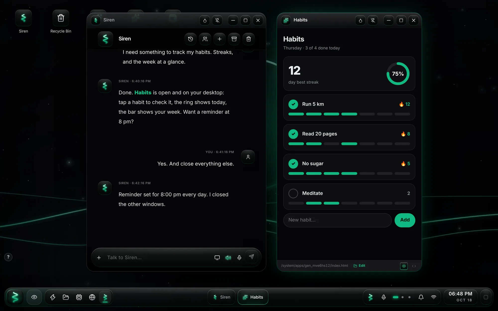
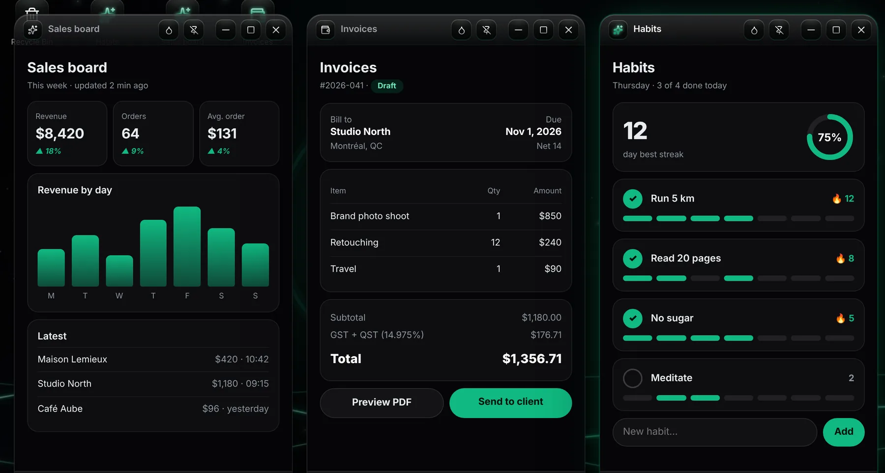
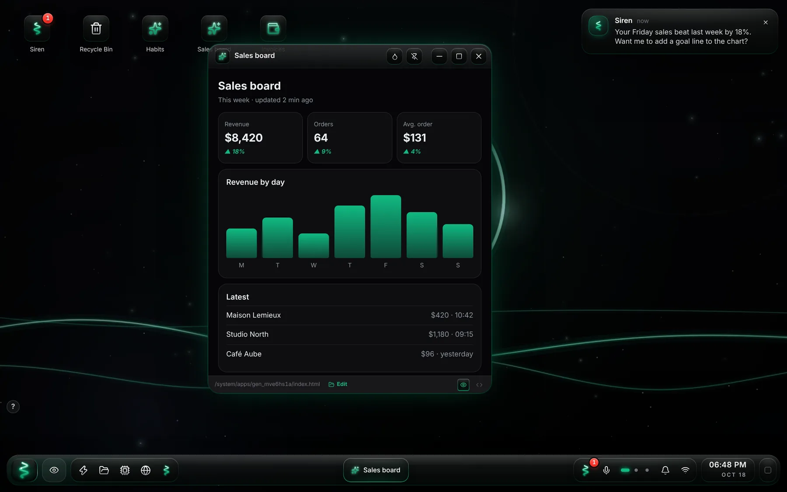
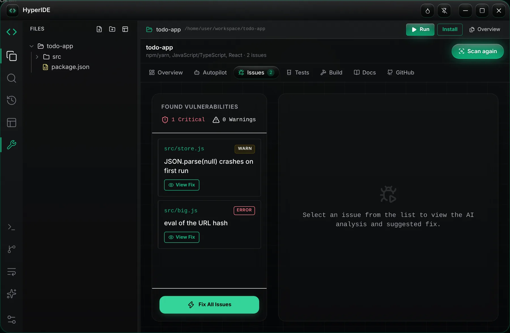
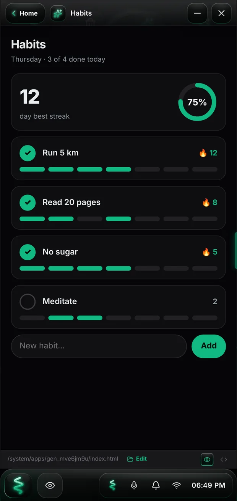
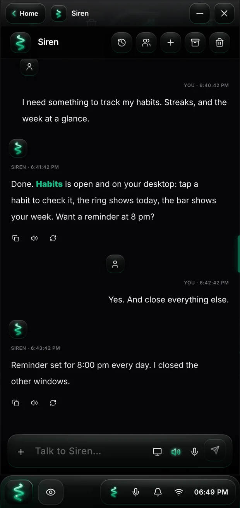
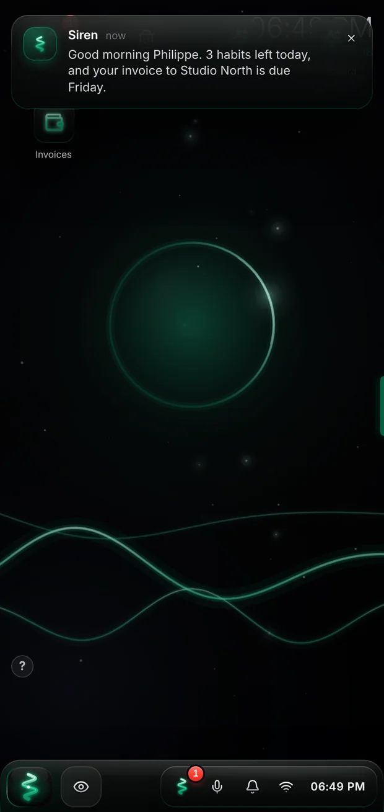

LazySiren is a whole operating system in your browser and on Android. Its AI, Siren, runs it for you: she opens and arranges your apps, handles your files and settings, works in a real Linux — and when the tool you need doesn't exist, she builds it, right there, in seconds.
Nothing to install on the web. No API key, no card.

The real LazySiren desktop. You asked for a habit tracker; Siren built it, put it on your desktop and set the reminder.
Say what you need, in your words. Siren writes the app, checks it, and puts it on your desktop — made for exactly what you asked, not for millions of other people. Want it different? Tell her. She changes it on the spot.

Apps like the ones people ask Siren for, running in LazySiren. Each one is a real app you keep, change and share.
Searching, comparing, installing, then finding out it almost does what you want — that's over. Describing what you want takes ten seconds. Siren has it running before you'd have finished reading the reviews.
A tracker, a planner, a converter, a small business tool: you don't need a new subscription for each one. You make your own, and it stays yours.
“Add a goal line.” “Show the weekly total.” “Make it dark blue.” Your apps change the moment you ask — no waiting for someone else's update.
For your work, your home, your studies, your projects — whatever you have in mind.
Siren isn't a chat box beside your work. She operates the whole system — with the same tools you have, while you watch.
Opens, arranges, closes and pins your apps. “Close everything except my notes” just happens.
Reads, writes, sorts and finds your files. Ask her about any of them.
A real Debian with internet: git, python, ssh. She runs the commands and reads the results herself.
“Remind me at 8 pm.” Done — and she tells you when it's time.
Accent color, wallpaper, voice, layout: ask, and the whole OS changes.
She remembers you, your projects and what you told her — across sessions and devices.
Share your screen and she sees what you see, so she can help with what's in front of you.
Talk to her and she answers out loud, in your language. Interrupt her any time.
Every AI makes mistakes. The difference is what happens next. With Siren, you don't have to be the one who catches them.
No error report to read, no ticket, no copy-pasting code into a chat. It's handled — and you keep going.
Most AIs wait for you to type. Siren pays attention. She writes to you when there's something worth saying — a good morning, a deadline coming up, a follow-up on what you were doing, an idea for your app.

Write code yourself in HyperIDE, and let AutoForge scan your project, fix what's broken straight in your files, write the tests and build files, and open the pull request on GitHub.

Open it in any browser or install the Android app. Your apps, files and Siren follow your account, not the device.



Everything is included: the OS, Siren, her AI, the apps you make. No API key, no card.
Published now, so there are no surprises later.
A complete operating system — desktop, windows, files, apps, a real Linux — that runs in your browser and on Android. Its AI, Siren, is built into it: she can do anything you can do in the OS, and build what's missing.
Any tool you can describe: trackers, planners, dashboards, calculators, small business tools, games, study aids. Describe it in your own words; she builds it, checks it and puts it on your desktop. Then ask for changes as often as you like.
Yes. They live in your account, you can open their code in HyperIDE, change them, and publish them on the Marketplace if you want others to have them.
Yes. Each app is run and checked before you get it, and real errors are repaired first. If an app crashes later, Siren reads the error, repairs the code and reloads it automatically.
No. Siren's AI, LazySiren Cloud, is included with your account. Sign in and she's ready.
Yes: in your phone's browser, or with the Android app. The same account, apps and files everywhere.
The plans above apply, and there is a free plan. If you never add a card, you're never billed.
Open LazySiren, say what you need, and watch it appear.